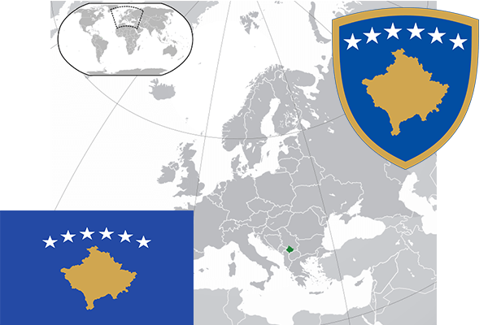

To`liq nomi: Kosovo Respublikasi
Region: Janubiy-Sharqiy Yevropa
Qonunchilik shakli: Respublika
Mustaqillik kuni: 17-fevral 2008– yil (Mustaqilligi baxs ostida)
Poytaxt: Prishtina
Maydoni: 10 887 km² (dunyoda 166 -o`rinda )
Chegaradosh davlatlari: Chernogoriya, Albaniya, Serbiya, Makedoniya
Aholisi: 1 883 018 (dunyoda 51 - o`rinda, 2016 -yil roʻyxat)
Aholi zichligi: 220 /km²
Aholining o`rtacha yoshi: 75,2 yil ( 77,9 ayollar, 72,5 erkaklar)
Rasmiy tili: Alban va Serb tillari
Dini: Pravoslav va musulmonlar
Pul birligi: Yevro
Telefon prefiksi: +383
Internet domen: -
Xalqaro tashkilotlarga a`zoligi: -
Dengiz va okeanlarga chiqishi: Yo`q
YIM: Butun: $ 6,604 mlrd
Yirik shaharlari: Prishtina, Pech, Prizren